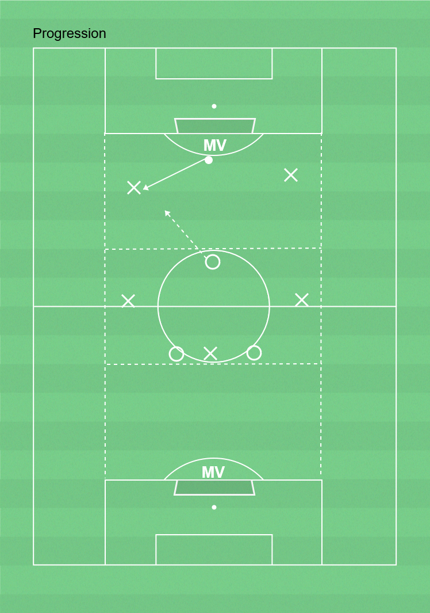

 ▶
▶
Speluppbyggnad
Anfallsspel - ta bollen framåt för att kunna göra målFörsvarsspel - ta bollen för att kunna anfalla
Anfallsspel- Ta bollen framåt mot fri yta på valfritt sätt. Individuellt eller med hjälp av medspelare- Grundförutsättningar i anfall- Bli rättvända- Målvakt - spela bollen till rättvända/halvt rättvända medspelare
Försvarsspel- Pressa, täcka och markera- Samarbeta i lagdelar- Målvakt - fånga bollen om du kan, annars stöt den mot sidan (palming)
7-12 spelare, yta 36-41x19m, bollar, västar
2 lag med varsin boll har som uppgift att spela bollen från MV till MV. Lägg in dynamisk rörlighet - tex övningar från knäkontroll i övnignen.
OBS! Endast progession är ritad